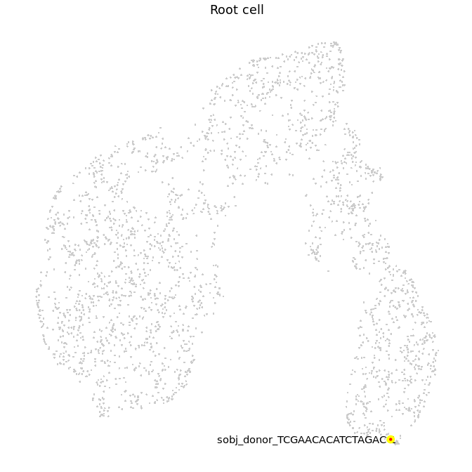
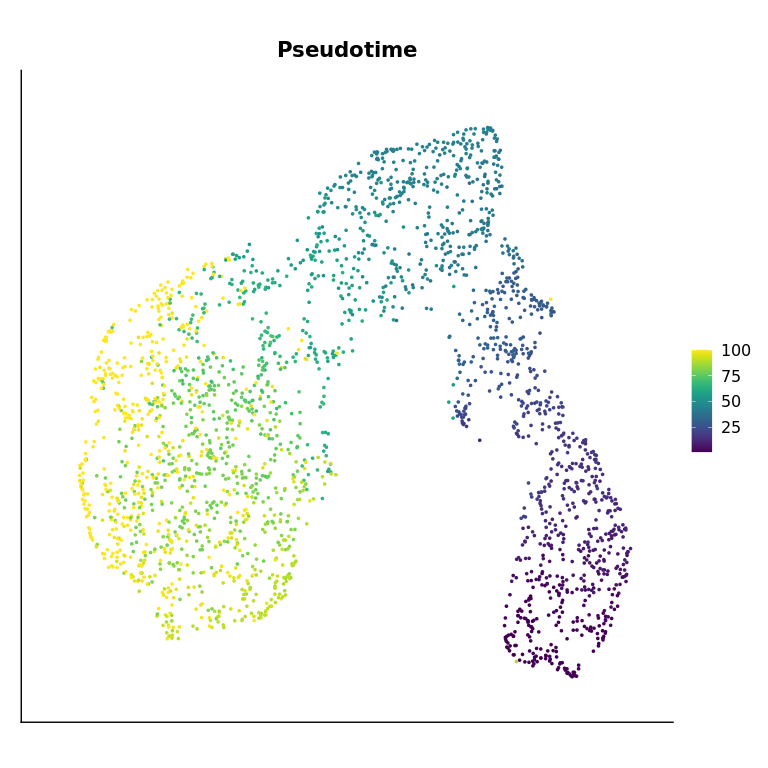
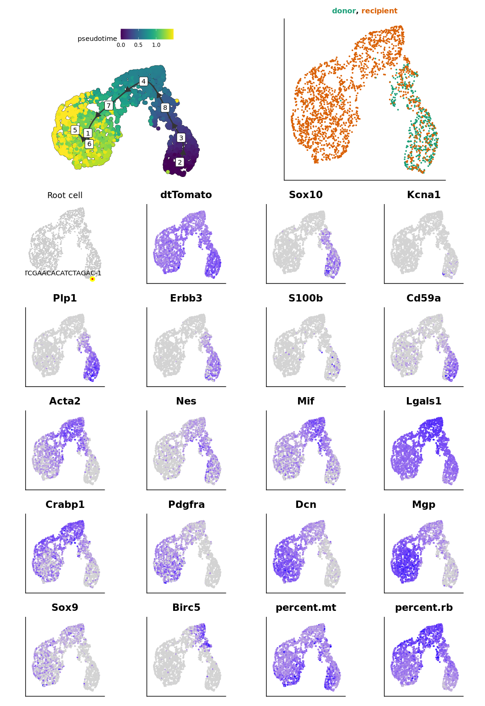

This script is used to infer trajectory on tumor cells, using TInGa.
Set environment
library(patchwork)
library(ggplot2)
library(dplyr)
We load the parameters :
out_dir = params$out_dir
We load the Seurat object containing all tumor cells from both datasets :
sample_name = "donor18_recipient23"
sobj = readRDS(paste0(out_dir, "/", sample_name, "_sobj_tumor_cells.rds"))
sobj
## An object of class Seurat
## 19179 features across 2556 samples within 2 assays
## Active assay: RNA (17179 features, 0 variable features)
## 1 other assay present: mnn.reconstructed
## 2 dimensional reductions calculated: mnn, mnn_umap
This are the settings :
load(paste0(out_dir, "/", sample_name, "_sample_info.rda"))
traj_dimred = "mnn"
traj_umap = "mnn_umap"
seed = 1337L
traj_max_dims = 50
Trajectory inference
Where is the root ?
root_cell_id = names(which.max(sobj$root_score))
sobj$is_root = colnames(sobj) == root_cell_id
sobj$cell_name = colnames(sobj)
root_plot = aquarius::plot_label_dimplot(sobj, reduction = traj_umap,
col_by = "is_root", col_color = c("gray80", "red"),
label_by = "cell_name", label_val = root_cell_id) +
ggplot2::ggtitle("Root cell") +
ggplot2::theme(plot.title = element_text(hjust = 0.5),
aspect.ratio = 1) +
Seurat::NoLegend() + Seurat::NoAxes()
sobj$is_root = NULL
sobj$cell_name = NULL
root_plot

Now, we perform the trajectory inference :
set.seed(seed)
my_traj = aquarius::traj_tinga(sobj,
seed = seed,
expression_assay = "RNA",
expression_slot = "data",
count_assay = "RNA",
count_slot = "counts",
dimred_name = traj_dimred,
dimred_max_dim = traj_max_dims,
root_cell_id = root_cell_id,
tinga_parameters = list(max_nodes = 8))
## Add pseudotime
sobj$pseudotime = my_traj$pseudotime
We can visualize pseudotime :
Seurat::FeaturePlot(sobj, features = "pseudotime",
reduction = traj_umap,
cols = viridis::viridis(n = 100)) +
ggplot2::ggtitle("Pseudotime") +
ggplot2::theme(plot.title = element_text(hjust = 0.5, face = "bold"),
axis.ticks = element_blank(),
axis.text = element_blank(),
axis.title = element_blank(),
aspect.ratio = 1)

We can generate the figure :
```{.r .fold-hide}
Make some plots
Colored title
https://stackoverflow.com/questions/55874998/replace-nth-occurrence-of-a-character-in-a-string-with-something-else
https://stackoverflow.com/questions/49735290/ggplot2-color-individual-words-in-title-to-match-colors-of-groups
samples_of_interest = unique(sobj$orig.ident)
mytitle = sapply(samples_of_interest, FUN = function(one_sample) {
one_color = sample_info[sample_info$sample_identifiant == one_sample, "color"]
new_char = paste0("", one_sample, "")
return(new_char)
})
if (length(mytitle) > 7) {
every4 = seq(from = 1, to = length(mytitle), by = 5)
every4 = every4[-1]
for (elem in every4) {
mytitle[elem] = paste0("
", mytitle[elem])
}
}
mytitle = paste(mytitle, collapse = ", ")
mytitle = gsub("((?:,+, ){3} +),", "\1\n", mytitle)
Trajectory on UMAP
p1 = dynplot::plot_dimred(trajectory = my_traj, label_milestones = TRUE, plot_trajectory = TRUE, dimred = sobj[[traj_umap]]@cell.embeddings, color_cells = 'pseudotime', color_trajectory = "none")
Gene of interest
p2 = Seurat::FeaturePlot(sobj, features = c("dtTomato", "Sox10", "Kcna1", "Plp1", "Erbb3", "S100b", "Cd59a", "Acta2", "Nes", "Mif", "Lgals1", "Crabp1", "Pdgfra", "Dcn", "Mgp", "Sox9", "Birc5", "percent.mt", "percent.rb"), reduction = traj_umap, combine = FALSE) p2 = lapply(p2, FUN = function(my_plot) { my_plot = my_plot + ggplot2::theme(aspect.ratio = 1, axis.ticks = element_blank(), axis.text = element_blank(), axis.title = element_blank()) + Seurat::NoLegend() return(my_plot) })
Sample of origin
p3 = Seurat::DimPlot(sobj, reduction = traj_umap, group.by = "orig.ident") + ggplot2::scale_color_manual(values = sample_info$color, breaks = sample_info$sample_identifiant) + ggplot2::ggtitle(mytitle) + ggplot2::theme(plot.title = ggtext::element_markdown(hjust = 0.5, face = "bold", size = 12), axis.ticks = element_blank(), axis.text = element_blank(), axis.title = element_blank(), aspect.ratio = 1) + Seurat::NoLegend()
Patchwork
p2[[length(p2) + 1]] = patchwork::guide_area() p2[[length(p2) + 1]] = root_plot p2[[length(p2) + 1]] = p1 p2[[length(p2) + 1]] = p3 p2 = p2[c(length(p2) - 3, # guide_area length(p2) - 1, # p1 : trajectory length(p2), # p3 : sample of origin length(p2) - 2, # root_plot 1:(length(p2) - 4))] # all features mylayout = "
AA#CCCC
BBBBCCCC BBBBCCCC BBBBCCCC DDEEFFGG DDEEFFGG HHIIJJKK HHIIJJKK LLMMNNOO LLMMNNOO PPQQRRSS PPQQRRSS TTUUVVWW TTUUVVWW "
p = patchwork::wrap_plots(p2) + patchwork::plot_layout(design = mylayout, guide = "collect") & ggplot2::theme(legend.direction = "horizontal")
In order to save the dataset, we create a list containing everything :
```{.r .fold-hide}
output = list(traj_umap = traj_umap,
traj_dimred = traj_dimred,
root_plot = root_plot,
my_traj = my_traj,
sobj = sobj,
p1 = p1, p2 = p2,
p3 = p3, p = p)
We can visualize the main figure :
output$p

We can zoom on the pseudotime figure :
output$p1

Where are cells from each dataset ?
```{.r .fold-hide}
Build plots
plot_list = aquarius::plot_split_dimred(sobj = sobj, reduction = traj_umap, split_by = "orig.ident", split_color = sample_info %>% dplyr::arrange(sample_identifiant) %>% dplyr::pull(color), group_by = "orig.ident", group_color = rep("black", length(unique(sobj$orig.ident))), bg_pt_size = 0.25, main_pt_size = 0.25) plot_list = lapply(plot_list, FUN = function(one_plot) { plot_title = as.character(one_plot$labels$title) nb_cells = sum(sobj$orig.ident == plot_title) one_plot = one_plot + ggplot2::labs(subtitle = paste0(nb_cells, " cells")) + ggplot2::theme(aspect.ratio = 1, plot.title = element_text(hjust = 0.5, face = "bold", size = 15), plot.subtitle = element_text(hjust = 0.5, face = "bold", size = 12)) + Seurat::NoLegend() })
Patchwork
patchwork::wrap_plots(plot_list, nrow = 1)
<img src="files/notebook_XPeG6rGZRe/tumor_split_by_origin-1.png" style="display: block; margin: auto;" />
We save it !
```r
saveRDS(output, file = paste0(out_dir, "/trajectory_output_tinga.rds"))
names(output)
## [1] "traj_umap" "traj_dimred" "root_plot" "my_traj" "sobj"
## [6] "p1" "p2" "p3" "p"